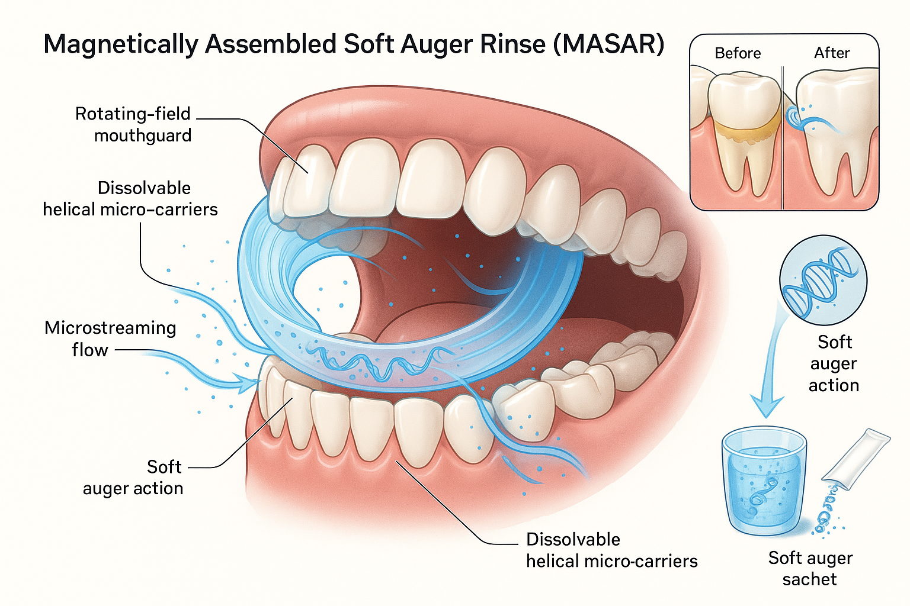

⚙️ The Innovation
A safe, daily mouth product that loosens and lifts sticky plaque between teeth and under the gums—fast—by combining self-assembling magnetic micro-"augers," gentle acoustic microstreaming, and biofilm-softening enzymes.
Core Insight from Analog
A sewer auger clears roots by delivering torque through a flexible shaft, then flushing debris. We miniaturize the function (not the form) with field-assembled, flexible micro-chains that swirl into interdental spaces, weaken plaque's glue (EPS), and lift debris for a rinse-out—like a soft auger.
What It Is:
- Rinse with biocompatible, enzyme blend (dextranase/mutanase + DNase I) to loosen EPS
- Mouthpiece that creates a low-frequency rotating magnetic field + gentle acoustic pulses
- Edible, starch-coated iron-oxide microbeads in the rinse self-assemble into flexible chains (micro-augers) and oscillate in the field to sweep interproximal and shallow subgingival zones; a quick water burst flushes the debris
🧬 Mechanism of Action
1. Matrix Softening (Chemistry)
- Glucanohydrolases (dextranase/mutanase) remodel/cleave α-glucans that cement plaque. Human and mixed-biofilm studies support EPS weakening. (ResearchGate, PMC)
- DNase I cleaves extracellular DNA, a structural scaffold in oral biofilms, reducing cohesion and facilitating removal. (PubMed)
2. Soft Mechanical "Augering" (Physics)
- Magnetic micro-chains (iron-oxide core, food-grade coating) assemble and align in a rotating field (tens of mT). The chains flex around embrasures like a cable auger, generating local shear at the tooth–plaque interface while staying soft against tissues. (PMC, ACS Publications)
- Acoustic microstreaming from gentle transduction (sonic/ultrasonic) boosts shear at boundaries and helps dislodge softened plaque without sharp tips. (ScienceDirect, PLOS)
3. Debris Evacuation
- A short pulsed irrigation clears freed material. Oral irrigators consistently improve bleeding/gingival indices, supporting this step as safe and beneficial. (Wiley Online Library)
📸 Concept Visualization

MASAR Implementation
Exploded view showing: (A) sachet of enzyme + coated iron-oxide microbeads poured into a small cup; (B) U-shaped mouthpiece with slim handle—coil segments along the arch and a small sonic transducer in the handle; (C) "During use" inset showing micro-chains (dark beads in flexible chain) forming between teeth under a rotating field, gently sweeping the embrasure; arrows depict microstreaming flow; (D) a rinse burst flushing loosened plaque out.
💡 Inspiration
The Sewer Auger Principle
A flexible shaft delivers rotational energy into hard-to-reach spaces, fractures the obstruction, then flushes the debris away.
Our Transfer: MASAR preserves the functions (reach → disrupt → evacuate) but swaps steel blades for soft, field-assembled magnetic chains plus enzyme softening and gentle microstreaming to stay safe for daily oral use.
Safety Translation: Concentrated shear becomes distributed, low-energy shear, and the "flush" becomes a brief irrigation burst after actuation.
📊 Baseline vs. MASAR — Outcomes & Targets
NOTE: "Targets" are hypotheses for study powering, not claims.
| Dimension | Baseline (Home Care Today) | MASAR Target (30–60 s cycle) | Rationale / Evidence |
|---|---|---|---|
| Interdental plaque detachment (single use) | Floss or water flosser: mixed results; single-use parity or small edge either way | +15–25% greater interdental plaque removal vs. water flosser alone (single use) | Adds matrix softening + mechanical engagement + microstreaming not present with irrigation alone |
| Bleeding on probing (2–4 wks) | Water flosser improves bleeding vs. floss in several trials/meta-analyses | Additional −15–30% bleeding sites vs. water flosser + brush | Faster detachment → less inflammation; irrigators already help—MASAR should add |
| Time to "clean feel" | 2–3 min (brush + floss/irrigate) | ≤60 s cycle | Field-assembled chains sweep multiple embrasures simultaneously + quick flush |
| User tolerance / comfort | Water flosser acceptable; ultrasonic sensations may bother some users | Comparable or better (low-power pulses, soft chains) | No hard tips; gentle interacting forces. Microstreaming at low level |
🛡️ Safety, Biocompatibility & Regulatory Notes
- Iron-oxide (E172) safety: EFSA's 2015 re-evaluation found no safety concern for iron oxides/hydroxides (E172) as food additives within specified uses; MASAR uses coated, non-nano, ingestible-mass-limited particles (EFSA, EFSA Journal)
- Non-contact assistance: Acoustic microstreaming/cavitation are documented in dentistry; we operate at conservative amplitudes for home use (ScienceDirect, PLOS)
- Regulatory path (US, hypothesis): Rinse (cosmetic/OTC drug depending on actives) + powered mouthpiece (Class II, likely 510(k) pathway akin to oral irrigators/sonic devices)
- Prior daily air-powder systems: (erythritol/glycine) are professional-use and low-abrasive; MASAR is non-abrasive home analog via soft chains + enzymes (Frontiers)
Contraindications & Cautions (to study)
- Fixed orthodontic appliances/retainers
- Metal restorations with exposed edges
- Users with implanted pacemakers/ICDs (magnet proximity); study labeling and field limits accordingly
✨ Novelty Assessment
Precedents Outside Dentistry
- Magnetic micro-robots and catalytic swarms have removed dental biofilm ex vivo (lab setting), validating magnetic guidance for oral biofilms
- NiTi rotary endodontic files demonstrate small-scale flexible torque transmission (root canals), not consumer plaque removal
Relevant IP Found (Adjacent)
- Magnetic toothpaste/brush systems and field-guided particles for oral cleaning appear in patents (e.g., US20100307086A1; EP3915434A1)
- MASAR differs by field-assembled soft chains + enzyme synergy + acoustic assist as a daily interdental solution
Verdict
Mechanistic analogy (augering) is old in principle, but MASAR's self-assembled soft auger + enzyme + microstreaming configuration for daily interdental use appears novel vs. commercial devices and distinct from lab-scale microrobot demos. Prior art exists around magnets in oral care; claim carefully and emphasize the integrated, chain-forming mechanism and specific biofilm-matrix synergy.
🚀 Impact-Readiness Levels (IRL)
1–9 scale like TRL; current estimates and gates to +1
| Pillar | Now | Rationale | Gate to Next |
|---|---|---|---|
| Scientific Validity | 4/9 | Strong plausibility: EPS enzymes + DNase (human/in vitro), microstreaming physics, magnetic biofilm removal ex vivo. Need home-use interdental data. | Bench typodont & ex vivo tooth studies: plaque surrogates + human plaque samples; quantify detachment vs. irrigator alone |
| Technical Feasibility | 4/9 | Off-the-shelf coils, drivers; edible iron-oxide supply; enzyme stability in rinse | Build alpha mouthpiece (<100 mT rotating field), demonstrate chain formation and safe interdental reach in gel fixtures |
| Regulatory Path | 3/9 | Components known; combo product & magnetic aspects new | Pre-sub with FDA; define non-nano, exposure limits, pacemaker warnings; finalize predicate strategy |
| Consumer/Use Fit | 3/9 | 60-sec cycle compelling; comfort unknown | n=20 home-use formative study on comfort/perceived clean + adherence |
📊 Impact × Readiness (Proposed vs. Baseline)
Explore
(High Impact, Low Readiness)
Develop
(High Impact, High Readiness)
Avoid
(Low Impact, Low Readiness)
Leverage
(Low Impact, High Readiness)
📋 0–90 Day Plan (Evidence & Prototypes)
0–30 Days
- Enzyme screen (bench): EPS-rich S. mutans mixed biofilm on hydroxyapatite; test dextranase/mutanase ± DNase for detachment vs. buffer. Outcome: % biomass reduction, cohesiveness
- Particle safety profiling: Verify non-nano size distribution, starch/cellulose coating integrity, iron release in artificial saliva; daily exposure << typical E172 dietary levels
- Field assembly demo: Rotating field rig; record chain formation and bend radius across 0.5–1.5 mm interdental analog gaps
31–60 Days
- Alpha mouthpiece (U-shaped coil pair or segmented coils) + low-power sonic actuator; log field strengths (≤~100 mT at surface), temperature rise, acoustic amplitude
- Typodont/Ex-vivo tests: Human plaque samples on extracted teeth; endpoints: residual plaque area (disclosing), plaque index change (single use), and particle retrieval
61–90 Days
- Pilot RCT (n≈24): MASAR vs. water flosser (both with standard brushing) over 2 weeks. Primary: bleeding on gentle probing; Secondary: interdental plaque via standardized scoring and image analysis. Power for 15–20% delta; safety logging
Measurement Plan (Example Endpoints)
- Single-use lab: % plaque area removed (planimetry), detachment force (microtensile), biofilm viscoelasticity shift after enzyme pre-soak
- Home pilot: Bleeding sites (%), Modified Gingival Index, Interproximal Plaque Index, time-to-clean (self-report), comfort (VAS). Benchmarks from irrigator literature guide effect sizes
⚠️ Risks & Mitigations
- Particle retention/ingestion: Limit concentration and session dose; design magnetic capture at mouthpiece exit screen; rinse-out step; E172 framework
- Pacemakers/implants: Conservative field, distance warnings, exclusion until verified
- Enzyme stability/irritation: pH-buffered formula, co-lyophilized enzyme pods reconstituted on use; patch testing
- Efficacy vs. tight contacts: Provide interdental elastomer tip to locally focus field, or brief floss threader for extremely tight areas (study variations)
What's "New" vs. Known
MASAR combines known pieces in a novel way: oral irrigators reduce bleeding/gingival inflammation (add mechanically engaged interdental micro-chains + enzymes to accelerate detachment), ultrasonic microstreaming aids non-contact disruption (use low-power pulses primarily for microstreaming while chains provide contact), enzymes soften oral EPS (pre-soak during chain actuation to lower required shear), and magnetic micro-robots remove dental biofilms ex vivo (daily consumer implementation via self-assembled chains in a rinse—not lab robots).